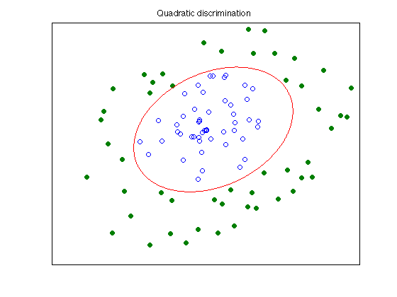

% Section 8.6.2, Boyd & Vandenberghe "Convex Optimization" % Original by Lieven Vandenberghe % Adapted for CVX by Joelle Skaf - 10/16/05 % (a figure is generated) % % The goal is to find an ellipsoid that contains all the points % x_1,...,x_N but none of the points y_1,...,y_M. The equation of the % ellipsoidal surface is: z'*P*z + q'*z + r =0 % P, q and r can be obtained by solving the SDP feasibility problem: % minimize 0 % s.t. x_i'*P*x_i + q'*x_i + r >= 1 for i = 1,...,N % y_i'*P*y_i + q'*y_i + r <= -1 for i = 1,...,M % P <= -I % data generation n = 2; rand('state',0); randn('state',0); N=50; X = randn(2,N); X = X*diag(0.99*rand(1,N)./sqrt(sum(X.^2))); Y = randn(2,N); Y = Y*diag((1.02+rand(1,N))./sqrt(sum(Y.^2))); T = [1 -1; 2 1]; X = T*X; Y = T*Y; % Solution via CVX fprintf(1,'Find the optimal ellipsoid that seperates the 2 classes...'); cvx_begin sdp variable P(n,n) symmetric variables q(n) r(1) P <= -eye(n); sum((X'*P).*X',2) + X'*q + r >= +1; sum((Y'*P).*Y',2) + Y'*q + r <= -1; cvx_end fprintf(1,'Done! \n'); % Displaying results r = -r; P = -P; q = -q; c = 0.25*q'*inv(P)*q - r; xc = -0.5*inv(P)*q; nopts = 1000; angles = linspace(0,2*pi,nopts); ell = inv(sqrtm(P/c))*[cos(angles); sin(angles)] + repmat(xc,1,nopts); graph=plot(X(1,:),X(2,:),'o', Y(1,:), Y(2,:),'o', ell(1,:), ell(2,:),'-'); set(graph(2),'MarkerFaceColor',[0 0.5 0]); set(gca,'XTick',[]); set(gca,'YTick',[]); title('Quadratic discrimination'); % print -deps ellips.eps
Find the optimal ellipsoid that seperates the 2 classes... Calling sedumi: 103 variables, 6 equality constraints For improved efficiency, sedumi is solving the dual problem. ------------------------------------------------------------ SeDuMi 1.21 by AdvOL, 2005-2008 and Jos F. Sturm, 1998-2003. Alg = 2: xz-corrector, Adaptive Step-Differentiation, theta = 0.250, beta = 0.500 eqs m = 6, order n = 103, dim = 105, blocks = 2 nnz(A) = 603 + 0, nnz(ADA) = 36, nnz(L) = 21 it : b*y gap delta rate t/tP* t/tD* feas cg cg prec 0 : 3.28E+02 0.000 1 : 0.00E+00 1.15E+02 0.000 0.3515 0.9000 0.9000 -1.39 1 1 2.9E+02 2 : 0.00E+00 2.31E+01 0.000 0.2005 0.9000 0.9000 -0.10 1 1 9.8E+01 3 : 0.00E+00 6.60E-01 0.000 0.0286 0.9900 0.9900 0.59 1 1 6.5E+00 4 : 0.00E+00 5.06E-05 0.000 0.0001 1.0000 1.0000 0.99 1 1 1.3E-02 5 : 0.00E+00 5.25E-12 0.000 0.0000 1.0000 1.0000 1.00 1 1 2.9E-09 iter seconds digits c*x b*y 5 0.0 2.6 3.2204638088e-13 0.0000000000e+00 |Ax-b| = 1.5e-11, [Ay-c]_+ = 0.0E+00, |x|= 6.1e-12, |y|= 7.7e+01 Detailed timing (sec) Pre IPM Post 1.000E-02 2.000E-02 0.000E+00 Max-norms: ||b||=0, ||c|| = 1.845499e+01, Cholesky |add|=0, |skip| = 0, ||L.L|| = 3.37316. ------------------------------------------------------------ Status: Solved Optimal value (cvx_optval): -3.22046e-13 Done!
